Ohm’s & Kirchoff’s Laws, Resistive Loads and Meters
BME253L - Fall 2025
Learning Objectives
Analyze Power and Energy Flow in Circuits
Define Ohm’s Law
Define Kirchoff’s Voltage and Current Laws
Resistive Loads
Voltage and Current Measurement Devices
Review from Last Lecture
\[ i = \frac{dq}{dt} \left[\frac{C}{s}\right] = [A] (Ampere) \]
\[ V = \frac{dW}{dq} \left[\frac{J}{C}\right] = [V] (Volt) \]
\[ P = \frac{dw}{dt} = \frac{dW}{dq} \frac{dq}{dt} = VI \left[W = \frac{J}{s}\right] \]
- Power is the capacity to do work per unit time, where:
\[ Work = Q \times V \]
which is the transfer of energy associated with moving charge across a potential difference.
Sources provide energy to a circuit (\(P < 0\)).
Loads consume energy from a circuit (\(P > 0\)).
Postive power is when postive current flows from \((+) -> (-)\) voltage drop across a circuit element:

Power Source/Load Example
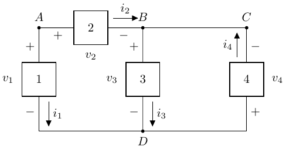
Given:
\[ \begin{gather} P_1 = -100 W \\ P_2 = 50 W \\ P_3 = 30 W \\ v_1 = 10 V \\ v_2 = 5 V \\ i_3 = 6 A \end{gather} \]
We don’t know what these circuit components are, but given power/voltage/current associated with them, we can determine if they are sources or loads, and solve for the unknown quantities.
Circuit Element 1
- Source or load?
- Solve for \(i_1\): \[ \begin{gather} P_1 = v_1 i_1 \\ -100 W = 10 V (i_1) \\ i_1 = -10 A \end{gather} \]
- Element 1 is a source!
Circuit Element 2
- Source or load?
- Solve for \(i_2\): \[ \begin{gather} P_2 = v_w i_2 \\ 50 W = 5 V (i_2) \\ i_2 = 10 A \end{gather} \]
- Element 2 is a load!
Kirchoff’s Current Law (KCL)
- Conservation of energy means that for a given node, all current flowing in and out of the node must be conserved.
\[ \begin{gather} \Sigma i_{in} = \Sigma i_{out} \end{gather} \]
For Node A, what currents are “in” and “out”?
As drawn (arbitrary), both are “out”, so:
\[ \begin{gather} \Sigma i_{in} = 0 \\ \Sigma i_{out} = i_1 + i_2 = -10 A + 10 A = 0 ✅ \end{gather} \]
- In this circuit, \(i_1 = -i_2\), which makes sense because they are the same magnitude, but flowing in different directions relative.
Kirchoff’s Current Law (KCL)
- Generalized form of current conservation at a node:
\[ \Sigma_{n=1}^N i_n = 0 \]
- You have to be very careful to correctly capture current direction (“in”/“out”) and magnitude.
Circuit Element 3
Source or load?
\[ v_3 = \frac{P_3}{i_3} = \frac{30 W}{6 A} = 5 V \]
Positive current flow “down” a voltage drop, so load!
Circuit Element 4
Source or load? You tell me… do we know enough?
Yes, we do!
Conservation of energy!
\(\Sigma_n P_n = 0\)
\(P_1 + P_2 + P_3 + P_4 = 0\)
\(P_4\) = 20 W (positive, so a load!)
What are \(v_4\) and \(i_4\)?
Assume that wires in circuits are ideal conductors (i.e., no energy loss).
\(v_B\) = \(v_C\) (same node)
Apply KCL:
\[ \begin{gather} i_{in} = i_{out} \\ i_2 + i_4 = i_3 \\ i_4 = i_3 - i_2 = 6 A - 10 A = -4 A \\ v_4 = \frac{P_4}{i_4} = \frac{20 W}{-4 A} = -5 V \end{gather} \]
Did we have to solve for \(i_4\)?
No!
\(v_B = v_C\) (ideal conductor assumption; same node)
Circuit elements 3 & 4 share common node \(D\).
As drawn on the circuit:
\[ \begin{gather} v_3 = v_B - v_D \\ v_4 = v_D - v_C = v_D - v_B = -v_3 = -5 V \end{gather} \]
- Then you can solve for \(i_4 = \frac{P_4}{v_4} = \frac{20 W}{-5 V} = -4 A\).
Kirchoff’s Voltage Law (KVL)
- The last example demonstrated another fundamental circuit analysis law:
\[ \Sigma_{n=1}^{N} v_n = 0 \]
- For a closed loop of a circuit (continuous path of conduction), the sum of all voltage gains = sum of all voltage losses.
\[ \Sigma v_{source} = \Sigma v_{load} \]
Does our circuit obey KVL?
We have 3 (not 2) closed loops:
- \(D \rightarrow A \rightarrow (B + C) \rightarrow D\)
\[ \begin{gather} \Sigma v = 0 = -v_1 + v_2 - v_4\\ 0 = -10 V + 5 V - (-5 V) = 0 ✅ \end{gather} \]
\(D \rightarrow A \rightarrow B \rightarrow D\) \[ \begin{gather} \Sigma v = 0 = -v_1 + v_2 + v_3\\ 0 = -10 V + 5 V + 5 V = 0 ✅ \end{gather} \]
\(D \rightarrow B \rightarrow C \rightarrow D\)
\[ \begin{gather} \Sigma v = 0 = -v_3 - v_4 \\ 0 = -5 V - (-5 V) = 0 ✅ \end{gather} \]
What happens if we reverse the loops?
You tell me.
Prove it.
Summary of Connection Constraints
Balance of Power: \(\Sigma_n P_n = 0\)
Conservation of Current at a Node (KCL): \(\Sigma_n i_n = 0\)
Conservation of Voltage around a Closed Loop (KVL): \(\Sigma_n v_n = 0\)
What do these laws tell us…
Parallel Devices
Devices in parallel have the same voltage difference across them:
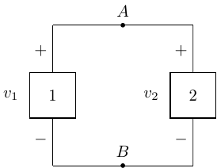
\[ v_1 = v_2 \]
Serial Devices
Devices in series have the same current flowing through them.
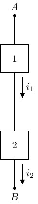
\[ i_1 = i_2 \]
Resistive Loads
- Resistors are dissipative loads (typically as heat).
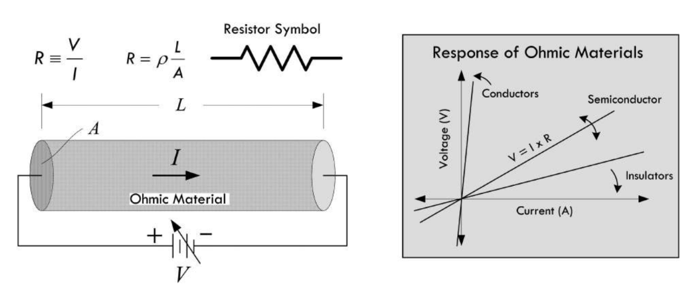
Conductive wire before/after the resistor element is considered “ideal” (non-dissipative).
\(\rho_{carbon} = 3.5 \times 10^{-5} \Omega \cdot m\)
Ohm’s Law
\[ \begin{gather} R = \frac{V}{I}\\ V = IR \end{gather} \]
Applicable over the linear range of “\(I-V\)” behavior (i.e., resistance, \(R\) doesn’t change as a a function of voltage or current).
\([\Omega]\) Ohm \(\rightarrow 1 \Omega = 1 \frac{V}{A}\)
Resistors always dissipate power (\(P > 0\)):
\[ \begin{gather} P_R = i_R v_R = i_R (i_R R) = i_R^2 R \geq 0\\ P_R = i_R v_R = \left(\frac{v_R}{R}\right)v_R = \frac{v_R^2}{R} \geq 0 \end{gather} \]
Conductance
Conductance (\(G\)) is the reciprocal of resistance.
Unit: Siemen [\(S\)]
\(1 S = 1 \frac{A}{V}\)
\(i = G v\)
Conductivity of Materials
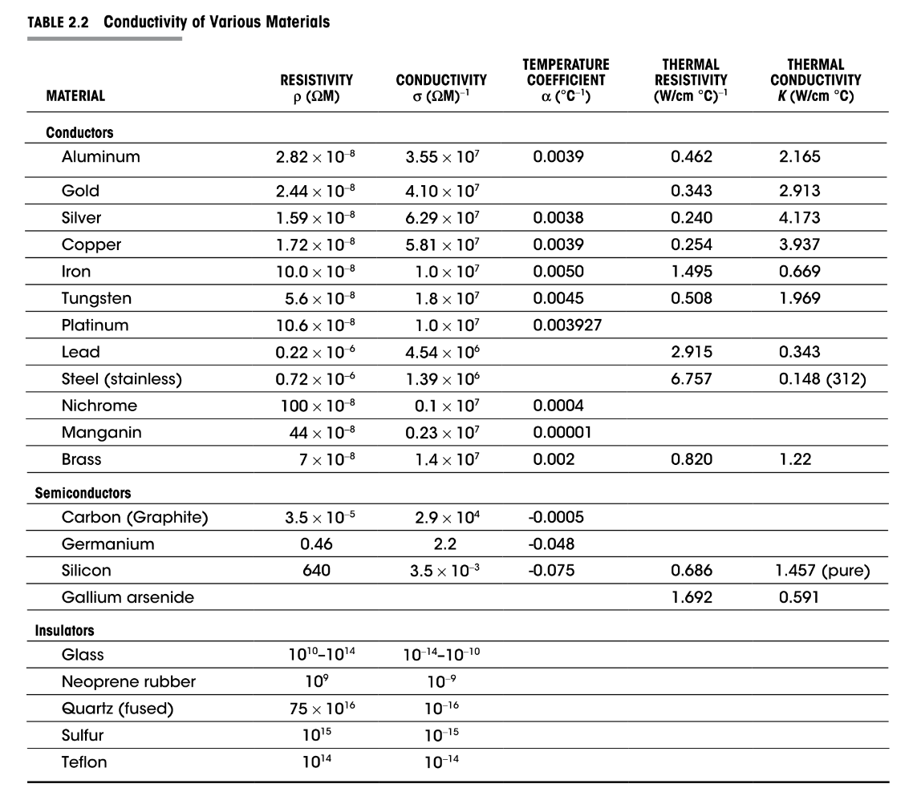
Resistive Power
\(P_R = i^2R = \frac{v^2}{R}\)
Quadratic dependence on \(i\) and \(v\).
Resistors have a maximum power rating that they can tolerate before they are damaged.m
Ceramic Resistor Labeling
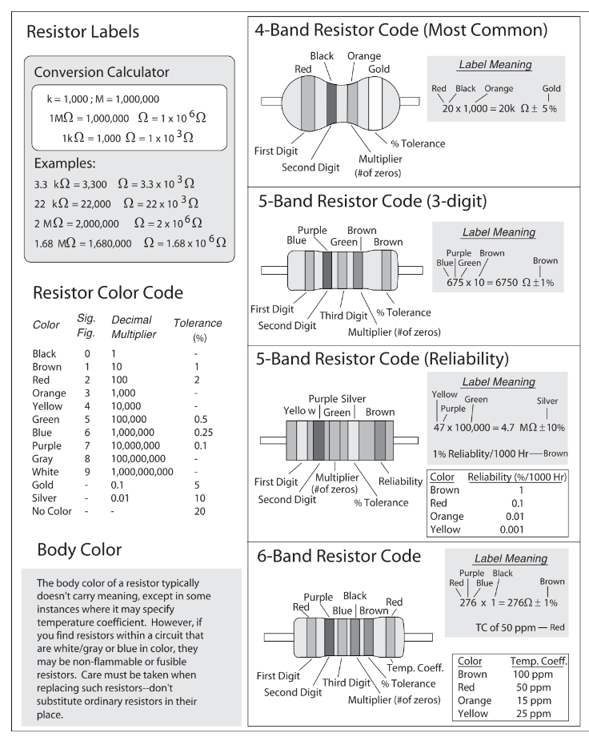
Switches
Switches are mechanical devices that interrupt or divert current flow in a circuit.
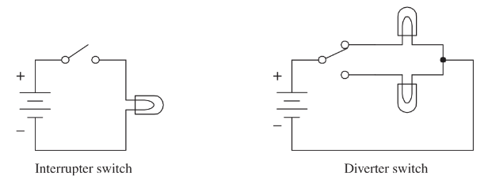
Open interrupter switches create an open circuit:
\(R \rightarrow \infty\)
\(i = 0\) (regardless of \(v\), to a point)
Closed interrupter switches create a short circuit:
\(R = 0\)
\(v = 0\) (regardless of \(i\))
\(P_{open} = 0 = P_{short}\) (why?)
Ideal Sources
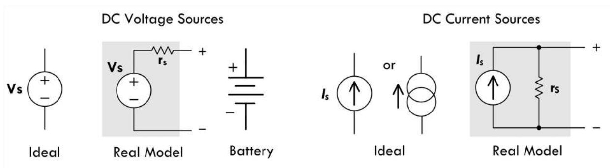
For an ideal voltage source, the source current is a function of the attached circuit resistance.
For an ideal current course, the source voltage is a function of the attached circuit resistance.
“Real” Source
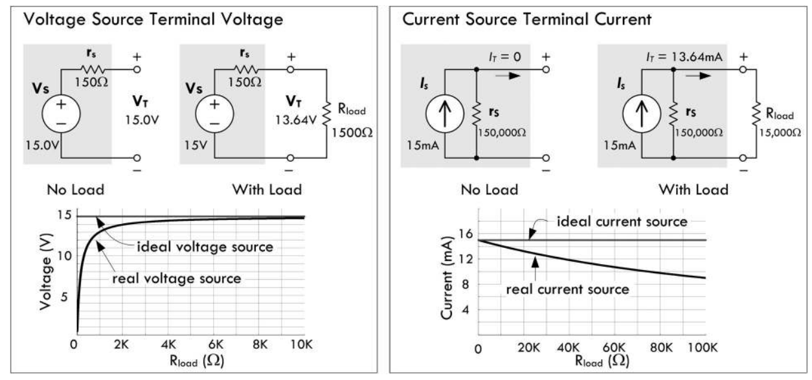
Real sources have internal resistance.
Ideally:
Internal resistance of a voltage source \(\rightarrow 0\).
Internal resistance of a current source \(\rightarrow \infty\).
Why?
Think KCL and KVL…
Implications of Internal Source Resistance
“Steals” power from being delivered to attached load.
Generates parasitic heat internally.
“Bad” Loads
What happens if the load attached to a voltage source is a short circuit (i.e., \(R_L = 0\))?
What happens if the load attached to a current source is an open circuit (i.e., \(R_L \rightarrow \infty\))?
Measuring Voltage, Current & Resistance
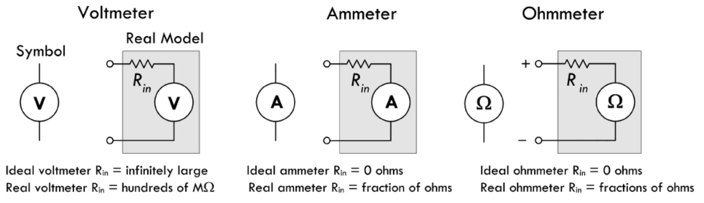
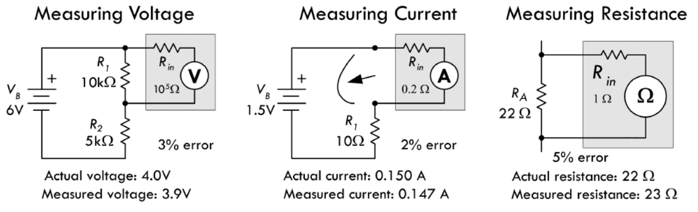
Summary of Circuit Analysis
Circuits are a connection collection of circuit elements that deliver, dissipate and store energy.
Ohm’s Law, KCL & KVL can be used to solve for the \(v\) and \(i\) quantities for circuit components.
Define directions (arbitrary) for current flow for all circuit components.
You do not have to try to “figure out” if a circuit component is a source or load; just assign the current direction and stick with it. The sign of the current will tell you what you need for its given direction.
- Label the voltage polarity of all sources and passive elements.
Have your currents point into the (+) voltage terminal of circuit components, and then if \(i > 0\), you know that \(P > 0\).
Compute circuit components powers.
\((+) i\) flows into \((+) v \rightarrow P > 0\)
\((+) i\) flows out of \((+) v \rightarrow P < 0\)
\(\Sigma_n P_n = 0\) ✅